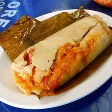

Tamales Recipe

The tamales are stuffed with a homemade masa and chicken filling made with tomatillos and 2 different types of
chile peppers - ancho chile and mulato chile.
The major difference between the Salvadoran tamal and some of the more well-known tamales especially from Mexico,
is that the Salvadoran one is not spicy,” said Norma Castro Flores, a native of El Salvador who's been living in
Washington, D.C., for more than 20 years.
Equipment
- Comal
- Sauce Pan
- Foil, pre-cut squares
- Large Pot
- Tamalera
Ingridients
- Tomatoes
- Garlic
- Onion
- Cumin
- Pumpkin Seed
- Bay Leaf
- Sesame Seeds
- Peppercorns
- Bell Pepper
- California pepper
- Banana leaves
- Garbazo beans
- Salt
- Masa harina
- Chicken Breast
- Knorr Caldo de pollo seasoning
- Potatoes
- Chicken Broth
- Green olives
Steps
- Make Salsa
- On a Comal on medium heat, roast the tomatoes, garlic, and onions. You can also add the bell pepper. Once they
have an even and beautiful golden color, you can remove them and set to the side.
- Next, toast the sesame seeds, pumpkin seeds, peppercorns, cumin, laurel leaf, and California pepper. Once evenly
browned, set aside
- Add all the toasted ingredients and salt to your blender. Blend until smooth.
- Mix the salsa with about a tablespoon of masa preparada. This will help to thicken the masa so it doesn’t absorb
into the tamales.
- Put the salsa into a saucepan on medium heat, stirring constantly. Warm until it bubbles.
- Once it bubbles, set it aside.
- Prepare the masa
- In a large pot on medium heat, add Northgate Masa Preparada, chicken broth, and a bit of olive oil.
- Stir constantly. Stirring is imperative to create the desired texture, and to prevent the masa from sticking to
the edges.
- You want the texture to be like that of frosting. Once the desired texture is reached, season with salt and
Knorr caldo de pollo seasoning if desired.
- Assemble the tamales
- Spread the masa on the banana leaf, place the shredded chicken. Now add one olive, a few garbanzo beans, and a
slice of potato. Drizzle salsa over the ingredients
- Fold over the banana leaf tightly. Then, wrap with foil.
- Pinch the edges to avoid the masa from seeping out of the ends.
- Steam for 2 hours in your tamalera.
- You will know they are ready when the leaves are dark green and the potato i s cooked and has a soft texture.
- Enjoy!